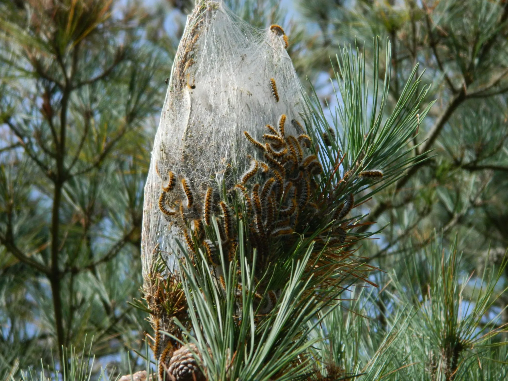
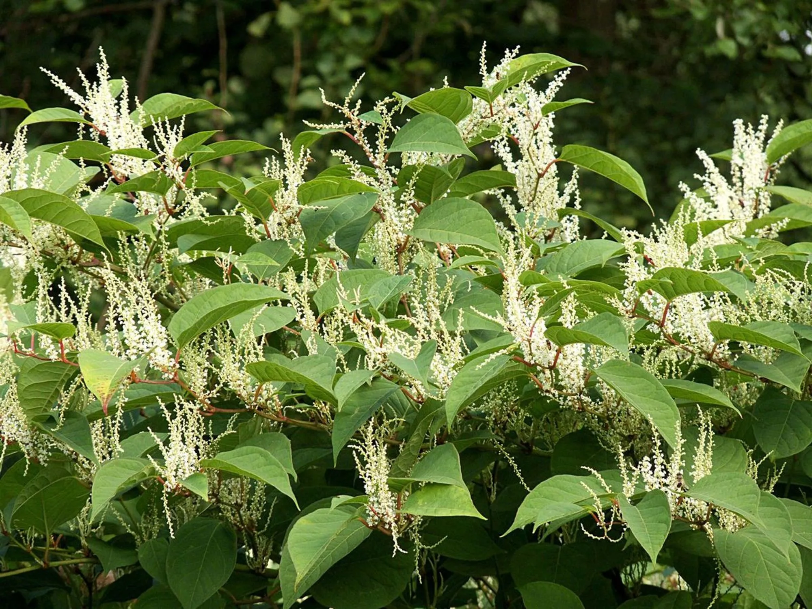

Partez à l'aventure
-
randonnéefauneinsolite
Signalement des Chenilles processionnaires du pin
Repérer les Chenilles processionnaires ou leurs nids dans des pinèdes, transmettre une photo géolocalisée.
Vallée du Valais, région lémanique • Printemps
-
baladeflore
Néophyte envahissante: Renouée du Japon
Signaler et participer à l’arrachage de cette néophyte envahissante très résistante.
Versoix, Genève • Toute l'année
-
baladefaune

Recensement du hérisson commun
Identifier et dénombrer, lors de promenades nocturnes, les populations de hérissons communs
Suisse Romande • nuit du 10.07 au 10.08 2024
Comportez vous convenablement
Respectez la nature
↑
- Se déplacer de manière adaptée : Favorisez la marche ou le vélo. Proscrivez tout autre moyen de déplacement, sauf en cas d’accessibilité réduite.
- Ne rien jeter : Collectez et gardez avec vous vos déchets, y compris les déchets compostables.
- Préserver le biotope : Laissez les choses à leur place. Ne pas cueillir ni ne ramasser de végétaux ou de minéraux.
Respectez la nature
↑
- Se déplacer de manière adaptée : Favorisez la marche ou le vélo. Proscrivez tout autre moyen de déplacement, sauf en cas d’accessibilité réduite.
- Ne rien jeter : Collectez et gardez avec vous vos déchets, y compris les déchets compostables.
- Préserver le biotope : Laissez les choses à leur place. Ne pas cueillir ni ne ramasser de végétaux ou de minéraux.